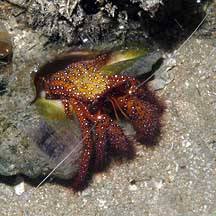
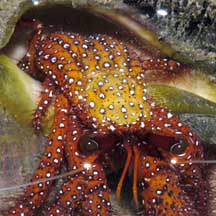
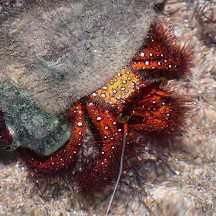
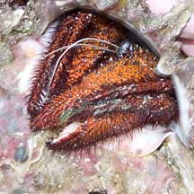

|
|
| hermit crabs text index | photo index |
| Phylum Arthropoda > Subphylum Crustacea > Class Malacostraca > Order Decapoda > Anomurans > hermit crabs |
| Spotted
orange hermit crab Dardanus megistos Family Diogenidae updated Dec 2019 Where seen? This bright orange hermit crab with white spots is sometimes seen on reefs and rubble on some of our shores. Features: Body 4-8cm long. Body, walking and pincers sparsely hairy, red or orange with scattered black-edged white spots. The left pincer is larger more bulbous than the right pincer which is more slender. Eyes with white rim on stout dark red eyestalks. Short antennae all orange or red to the feathery tips. Long antennae white. |
 Pulau Sekudu, Jun 03 |
 Tanah Merah, Jun 09 |
 |
| Spotted orange hermit crabs on Singapore shores |
On wildsingapore
flickr
|
| Other sightings on Singapore shores |
 Sisters Island, Aug 15 Photo shared by Loh Kok Sheng on his blog. |
 Terumbu Pempang Laut, Apr 11 |
| Terumbu Pempang
Laut, Apr 11 Huge Spotted orange hermit crab (Dardanus megistos) from Loh Kok Sheng on Vimeo. |
| Acknowledgements With grateful thanks to liwaliw for identifying this hermit crab on wildsingapore flickr. Links
|